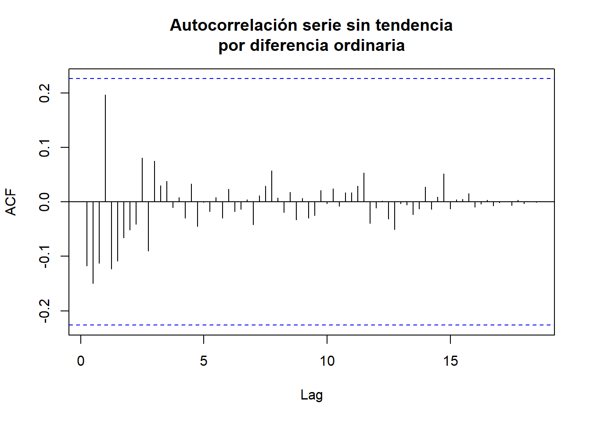
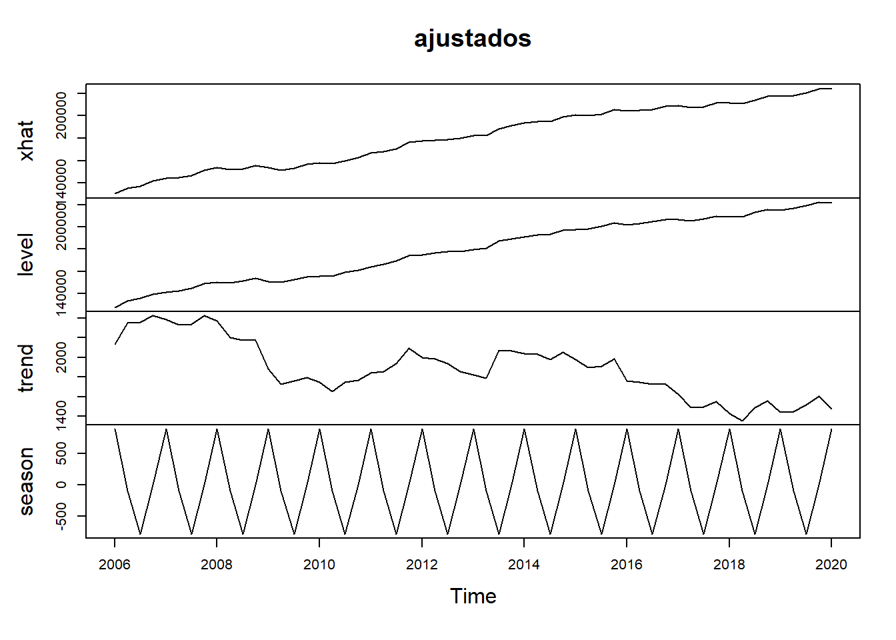
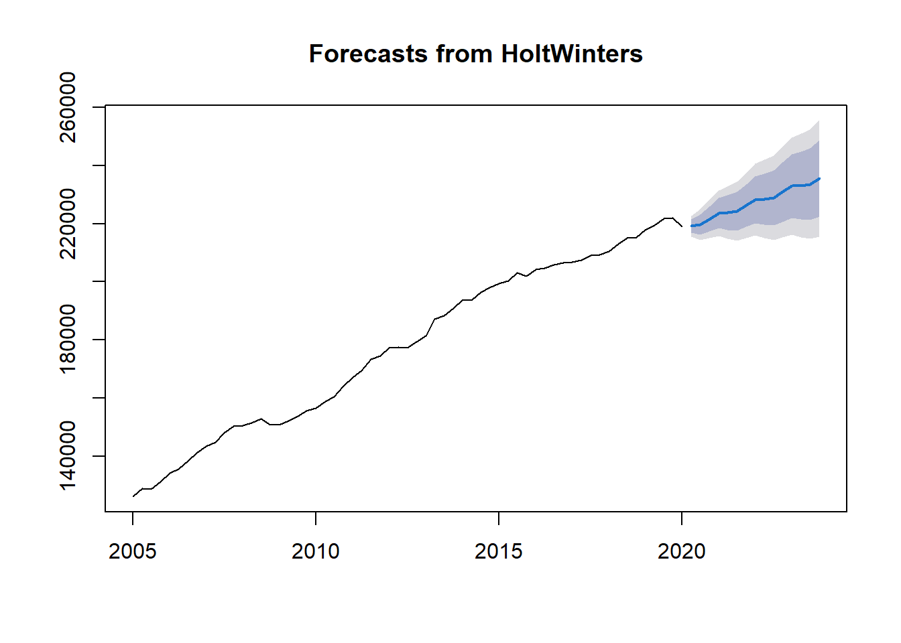

library(plotly)
library(forecast)
library(MASS)
library(tidyverse)
library(lubridate)
library(timetk)
library(tibble)
library(zoo)
library(tsibble)
library(feasts)
library(fable)
library(cowplot)
library(astsa)
library(TSstudio)
library(fabletools)
library(TSA)
library(readxl)PIBQuarto
El siguiente trabajo abarca todas las metodologías vistas en el semestre 2024-1 de la asignatura Series de Tiempo Univariadas, utilizando la medición trimestral del PIB en Colombia a precios constantes (calculando el agregado a partir de la suma de las actividades económicas de Colombia), a partir del primer trimestre de 2005, hasta el último trimestre del 2023.
Integrantes
- Ander Cristancho
- Anderson Guarin
- Juan David Duitama
Librerías utilizadas
Importación de datos
PIB3 <- read_excel("C:/Users/ander/OneDrive - Universidad Nacional de Colombia/Documentos/(2024-01) Octavo Semestre/Series de Tiempo Univariadas/Proyecto/1. Bases de Datos/PIB.xlsx", range = "AS18:AS93", col_names = FALSE)New names:
• `` -> `...1`Visualización de datos
PIB3TS <- ts(PIB3, start = c(2005, 1), end = c(2023, 4), frequency = 4)
#Convirtiendo los datos originales en objeto serie de tiempo(ts)
plot_ly( x = time(PIB3TS), y = PIB3TS, type = 'scatter', mode = 'lines',color=I("red")) %>%
layout(title = 'PIB Trimestral en Colombia',
xaxis = list(title = 'Trimestre', rangeslider = list(type = 'date')))La conclusión inicial con este primer gráfico es que se observa la tendencia creciente del PIB, se presentó una caída súbita a partir del año 2020, ya es sabido lo que ocurrió en ese periodo. Una vez llegado el tercer trimestre de 2021, el PIB consiguió seguir la tendencia creciente que se tenía desde antes de la pandemia.
Autocorrelación
A continuación, se presenta un primer gráfico de la autocorrelación, recordemos que éste no es válido, hasta que retiremos la tendencia y la estacionalidad.
acf(PIB3TS,lag.max = length(PIB3TS))
Análisis descriptivo
Como ya mencionamos anteriormente, el primer componente que se puede identificar en la serie de tiempo es la tendencia creciente del PIB, aparenta haber un ciclo en el que se tienen años con PIB con tendencia a aumentar, luego, se tienen otros años en los que su tendencia disminuye. Se puede observar esto desde 2001 hasta alrededor del segundo trimestre de 2008, luego desciende, hasta empezar a crecer de nuevo, para empezar a decrecer en 2012 y crecer nuevamente en 2013.
Estabilización de la Varianza (Tranformación Box-Cox)
Primero se recurre a realizar la estabilización de la varianza de la serie, a través de la Transformación Box-Cox.
Lambda<-BoxCox.lambda(PIB3TS, method ="loglik", lower = -3, upper = 3)#Encontrando el valor de Lambda
Lambda[1] 1.05El \(\lambda\) resultante es cercano a 1, por lo que no será necesario realizar una transformación sobre los datos.
MASS::boxcox(lm(PIB3TS ~ 1),seq(-3, 3, length = 50))Con el Boxcox, se confirma que \(\lambda\) tiene un valor cercano a 1, pero que abarca el 0 en su intervalo de confianza.
Extracción de la tendencia
Estimación mediante un modelo lineal
A continucación, se realiza un modelo de regresión lineal simple utilizando como variable regresora el tiempo, y como variable de estudio, el PIB trimestral.
summary(fitLM <- lm(PIB3TS~time(PIB3TS), na.action=NULL))#Creando un modelo de regresión lineal
Call:
lm(formula = PIB3TS ~ time(PIB3TS), na.action = NULL)
Residuals:
Min 1Q Median 3Q Max
-41575 -2722 967 3974 7912
Coefficients:
Estimate Std. Error t value Pr(>|t|)
(Intercept) -1.217e+07 3.034e+05 -40.11 <2e-16 ***
time(PIB3TS) 6.135e+03 1.506e+02 40.73 <2e-16 ***
---
Signif. codes: 0 '***' 0.001 '**' 0.01 '*' 0.05 '.' 0.1 ' ' 1
Residual standard error: 7201 on 74 degrees of freedom
Multiple R-squared: 0.9573, Adjusted R-squared: 0.9567
F-statistic: 1659 on 1 and 74 DF, p-value: < 2.2e-16plot(PIB3TS, ylab="PIB trimestral en Colombia",xlab="Trimestre")
abline(fitLM,col = "red")Haciendo una revisión meramente visual, el modelo lineal resultante logra capturar el comportamiento creciente del PIB trimestral, ignorando el suceso ocurrido en 2020 claramente. La serie resultante de extraer esta tendencia lineal es la siguiente.
PIB3NoLM=PIB3TS-predict(fitLM)#Eliminando la tendencia
plot_ly( x = time(PIB3NoLM), y = PIB3NoLM, type = 'scatter', mode = 'lines',color=I("red")) %>%
layout(title = 'PIB trimestral en Colombia con tendencia lineal extraída',
xaxis = list(title = 'Trimestre', rangeslider = list(type = 'date')))Al realizar la extracción respectiva, la serie resultante no es adecuada para continuar con el análisis, puesto que el valle resultante de la extracción en años de pandemia perjudica los próximos procedimientos. Lo cual provocaría que al realizar predicciones bajo el modelo lineal, éstas sean subajustadas.
Diferencia ordinaria
DiferenciaOrd<-diff(PIB3TS)
plot_ly( x = time(DiferenciaOrd), y = DiferenciaOrd, type = 'scatter', mode = 'lines',color=I("red")) %>%
layout(title = 'PIB sin tendencia(Diferencia Ordinaria, lag=1)',
xaxis = list(title = 'Trimestre', rangeslider = list(type = 'date')))Las conclusiones al extraer la tendencia, mediante diferencia ordinaria,
Comparando las funciones de autocorrelación de las series sin tendencia
acf(PIB3TS,lag.max = length(PIB3TS))par(mfrow = c(1, 1))
acf(PIB3NoLM,lag.max =length(PIB3NoLM),main="Autocorrelación serie sin tendencia lineal")acf(DiferenciaOrd,lag.max =length(DiferenciaOrd),main="Autocorrelación serie sin tendencia\npor diferencia ordinaria")
Explorando relaciones no lineales
Gráficos de retardos
El gráfico de retardos indica que hay una relación lineal con el retardo número 4 en la serie con tendencia extraída por diferencia ordinaria.
#El gráfico de retardos se realiza con la serie con tendencia extraída
#Tendencia extraída por diferencia ordinaria
par(mar = c(3,2,3,2))
lag1.plot(DiferenciaOrd, 4,corr=T)Detección de estacionalidad
Un primer gráfico propuesto para la detección de la estacionalidad de forma visual es el siguiente, recordemos que está siendo aplicado en la serie con la tendencia extraída.
#Tendencia extraída por diferencia ordinaria
TSstudio::ts_heatmap(DiferenciaOrd,title = "Mapa de Calor - PIB en Colombia(Diferencia Ordinaria)")monthplot(DiferenciaOrd,main="Subseries(Diferencia Ordinaria)")Otra alternativa es utilizar los gráficos de cajas
indice1=as.Date(as.yearmon(tk_index(PIB3TS)))#Convirtiendo en fecha el indice de DesempleoTSBox, deja como primero de enero cada fecha
indice1.1=yearmon(as.yearmon(tk_index(PIB3TS)))#Dejando esa fecha solo como año y mes
## Haciendo el objeto tsibble
df=data.frame(Fecha=indice1,PIB=as.matrix(PIB3TS))
colnames(df)[2]<-"PIB"
PIB3TSibble=as_tsibble(df)Using `Fecha` as index variable.## Haciendo el objeto tsibble
df=data.frame(Fecha=indice1,PIB=as.matrix(PIB3TS))
colnames(df)[2]<-"PIB"
PIB3TSibble=as_tsibble(df)Using `Fecha` as index variable.PIB3TSibble <- PIB3TSibble %>%
mutate(index = as.Date(Fecha))
PIB3TSibble<-PIB3TSibble%>%mutate(Diferencia=PIB-lag(PIB))
PIB3TSibble %>%
na.omit() %>%
plot_seasonal_diagnostics(.date_var = index, .value = Diferencia, .feature_set = c("quarter"), .geom = "boxplot")Finalmente, un gráfico con las estimaciones de las densidades.
ggplot(PIB3TSibble %>%na.omit()|>
mutate(
Trimestre = str_c("Trimestre ", as.character(lubridate::quarter(index)))
), aes(x = Diferencia)) +
geom_density(aes(fill = Trimestre)) +
ggtitle("LosPass - Estimación de la densidad vía Kernel por trimestre") +
facet_grid(rows = vars(as.factor(Trimestre)))Encontrando el periodo de la serie
#Diferencia ordinaria
PeriodgramadTra=spectrum(as.numeric(DiferenciaOrd),log='no')ubicacion=which.max(PeriodgramadTra$spec)
sprintf("El valor de la frecuencia donde se máximiza el periodograma para la serie con tendencia extraída por diferencia ordinaria es: %s",PeriodgramadTra$freq[ubicacion])[1] "El valor de la frecuencia donde se máximiza el periodograma para la serie con tendencia extraída por diferencia ordinaria es: 0.226666666666667"sprintf("El periodo correspondiente es aproximadamente: %s",1/PeriodgramadTra$freq[ubicacion])[1] "El periodo correspondiente es aproximadamente: 4.41176470588235"De acuerdo a la información reportada en el gráfico de periodograma, no es necesario modelar la estacionalidad.
Suavizamiento Exponencial
El suavizamiento exponencial es un modelo que contiene 3 parámetros, dos relacionados a la estimación de la componente de tendencia, y el tercero a la componente de estacionalidad. Teniendo en cuenta que para este conjunto de datos no se requiere modelar la estacionalidad, solo se tendrán en cuenta los parámetros correspondientes a la compente de tendencia.
\[\begin{align*} a_t & = \alpha(x_t-s_{t-p}) + (1-\alpha)(a_{t-1}+b_{t-1}) \\ b_t & = \beta(a_t-a_{t-1}) + (1-\beta)b_{t-1} \\ \end{align*}\]El siguiente modelo se manejará con los datos originales, por lo tanto, para evaluar la capacidad predictiva del modelo, utilizando la predicción a un paso, emplearemos el 80% de la serie como conjunto de entrenamiento y el 20% restante como prueba. Es decir, el periodo de entrenamiento corresponde a los primeros 61 trimestres, es decir, de enero de 2005 hasta marzo de 2020, por otro lado, el periodo de prueba corresponde a abril de 2020 hasta diciembre de 2023.
Train=ts(PIB3TS[1:61], start = c(2005, 1),frequency = 4)
Test=ts(PIB3TS[62:76],start=c(2020,2),frequency = 4)
HWAP=stats::HoltWinters(Train,gamma=0)
plot_ly(x = time(PIB3TS[5:61]), y = PIB3TS[5:61], type = 'scatter', mode = 'lines', color = I("red"), name = "Original") %>% add_trace(y = HWAP$fitted[,1], mode = 'lines', line = list(color = 'blue'), name = "EWMA") %>% layout(title = 'Suavizamiento Exponencial',xaxis = list(title = 'Trimestre', rangeslider = list(type = 'date'))) ajustados=fitted(HWAP)#Guarda las estimaciones que hace el modelo para cada trimestre desde enero de 2004 hasta marzo de 2020
plot(ajustados)#Gráfico de las tres componentes, nivel, pendiente y estacionalidad 
HWAPHolt-Winters exponential smoothing with trend and additive seasonal component.
Call:
stats::HoltWinters(x = Train, gamma = 0)
Smoothing parameters:
alpha: 1
beta : 0.05826555
gamma: 0
Coefficients:
[,1]
a 218116.778629
b 1162.856487
s1 -93.540972
s2 -791.140404
s3 -2.953189
s4 887.634566La estimación del parámetro de Nivel alpha es 0.8704311, de Pendiente beta 0.08945198 y de estacionalidad gamma 1.
Por último evaluaremos la capacidad predictiva del modelo haciendo las 15 predicciones para el periodo correspondiente a prueba. Abril de 2020 hasta diciembre de 2023.
predictionHWAP_1=forecast::forecast(HWAP,h=15)
predictionHWAP_1 Point Forecast Lo 80 Hi 80 Lo 95 Hi 95
2020 Q2 219186.1 216828.9 221543.3 215581.1 222791.1
2020 Q3 219651.4 216219.3 223083.4 214402.4 224900.3
2020 Q4 221602.4 217277.3 225927.5 214987.8 228217.0
2021 Q1 223655.8 218520.2 228791.5 215801.6 231510.1
2021 Q2 223837.5 217936.4 229738.6 214812.6 232862.5
2021 Q3 224302.8 217662.9 230942.7 214147.9 234457.7
2021 Q4 226253.8 218891.1 233616.5 214993.6 237514.1
2022 Q1 228307.3 220231.2 236383.3 215956.0 240658.5
2022 Q2 228488.9 219704.5 237273.4 215054.3 241923.5
2022 Q3 228954.2 219463.3 238445.1 214439.1 243469.3
2022 Q4 230905.2 220707.4 241103.1 215309.0 246501.5
2023 Q1 232958.7 222052.0 243865.4 216278.3 249639.1
2023 Q2 233140.4 221521.4 244759.3 215370.7 250910.0
2023 Q3 233605.6 221270.3 245941.0 214740.3 252471.0
2023 Q4 235556.7 222499.9 248613.5 215588.0 255525.3plot(predictionHWAP_1)
El error cuadrático medio es
mean((Test-predictionHWAP_1$mean)^2)[1] 212455066Recordemos que el error cuadrático medio es alto debido a que los datos se encuentran en la escala original.
plot_ly(x = time(Test), y = Test, type = 'scatter', mode = 'lines', color = I("red"), name = "PIB") %>% add_trace(y = predictionHWAP_1$mean, mode = 'lines', line = list(color = 'blue'), name = "Predicciones") %>% layout(title = 'PIB vs Predicciones (Abril 2020-Diciembre 2023)',xaxis = list(title = 'Trimestre', rangeslider = list(type = 'date')))Rolling
Rolling manual
h=1
lserie=length(PIB3TS)
ntrain=trunc(length(PIB3TS)*0.80)+1 ##% del datos en el conjunto de entrenamiento es del 80%.
ntrain [1] 61time(PIB3TS) Qtr1 Qtr2 Qtr3 Qtr4
2005 2005.00 2005.25 2005.50 2005.75
2006 2006.00 2006.25 2006.50 2006.75
2007 2007.00 2007.25 2007.50 2007.75
2008 2008.00 2008.25 2008.50 2008.75
2009 2009.00 2009.25 2009.50 2009.75
2010 2010.00 2010.25 2010.50 2010.75
2011 2011.00 2011.25 2011.50 2011.75
2012 2012.00 2012.25 2012.50 2012.75
2013 2013.00 2013.25 2013.50 2013.75
2014 2014.00 2014.25 2014.50 2014.75
2015 2015.00 2015.25 2015.50 2015.75
2016 2016.00 2016.25 2016.50 2016.75
2017 2017.00 2017.25 2017.50 2017.75
2018 2018.00 2018.25 2018.50 2018.75
2019 2019.00 2019.25 2019.50 2019.75
2020 2020.00 2020.25 2020.50 2020.75
2021 2021.00 2021.25 2021.50 2021.75
2022 2022.00 2022.25 2022.50 2022.75
2023 2023.00 2023.25 2023.50 2023.75time(PIB3TS)[ntrain]###Me entrega la ultima fecha de la posición ntrain #Partiendo la serie en entrenamiento y test [1] 2020train=window(PIB3TS,end=time(PIB3TS)[ntrain])
test=window(PIB3TS,start=time(PIB3TS)[ntrain]+1/4)##1/4 porque es la fracción que corresponde a un trimestre
length(train) [1] 61ntest=length(test)
ntest ##Me define el valor de origins, o de ventanas de rolling. [1] 15lserie ### Comparar los valores [1] 76fchstepahe=matrix(0,nrow=ntest,ncol=h) ##Crea una Columna para los h-pasos adelante ### verval contiene los verdaderos valores de la serie en el conjunto de prueba con los que se compararán los pronósticos.
verval=cbind(test[1:ntest]) #for(j in 2:h){ # verval=cbind(verval,c(test[j:ntest],rep(NA,j-1))) ##### Este for sobra porque sólo hacemos predicción un paso adelante #} #verval=cbind(test[1:ntest],c(test[2:ntest],NA),c(test[3:ntest],NA,NA)) ####Ajuste del modelo con los datos de entrenamiento
HWAP_train=stats::HoltWinters(train,gamma = 0)
HWAP_train$alpha alpha
1 HWAP_train$beta beta
0.05826555 HWAP_train$gamma ###Observación: Note que que esos son las estimaciones de los parámetros de suavizamiento. Se puede también hacer una grilla de valores para explorar si hay unos valores mejores. # por ejemplo como sigue: [1] 0require(utils)
suav_inputs=cbind(seq(0.001,0.999,0.1),seq(0.001,0.999,0.1))
colnames(suav_inputs)<-c("alpha","beta")
suav_inputs_tbl=tibble::as_tibble(suav_inputs)
grilla_suav=expand.grid(alpha=suav_inputs_tbl$alpha,beta=suav_inputs_tbl$beta) ##Grilla de Valores ####Se crean las ventanas de rolling y se obtiene los h-pronósticos para cada ventana(hay ntest posibles ventanas)
for(i in 1:(ntest)){x=window(PIB3TS,end=time(PIB3TS)[ntrain]+(i-1)/12)
print(length(x))
refit=stats::HoltWinters(x,seasonal=NULL,alpha=HWAP_train$alpha,bet=HWAP_train$beta)
fchstepahe[i,]=as.numeric(forecast::forecast(refit,h=h)$mean) } [1] 61
[1] 61
[1] 61
[1] 62
[1] 62
[1] 62
[1] 63
[1] 63
[1] 63
[1] 64
[1] 64
[1] 64
[1] 65
[1] 65
[1] 65fchstepahe [,1]
[1,] 219186.1
[2,] 219186.1
[3,] 219186.1
[4,] 181009.0
[5,] 181009.0
[6,] 181009.0
[7,] 202884.4
[8,] 202884.4
[9,] 202884.4
[10,] 216187.2
[11,] 216187.2
[12,] 216187.2
[13,] 222405.9
[14,] 222405.9
[15,] 222405.9errores_pred=verval -fchstepahe ##Observación: debo devolver los pronósticos y los verdaderos valores a la escala original si es necesario.
ECM=apply(errores_pred^2,MARGIN = 2,mean,na.rm=TRUE) ##Acá se computa la medida de precisión del pronóstico(en este caso ECM).
RECM=sqrt(ECM) ##Se le saca raíz #RECM ##se lee: Primera fila RECM 1-paso adelante y así sucesivamente.
ECM[1] 1007600296plot_ly(x = time(test), y = test, type = 'scatter', mode = 'lines', color = I("red"), name = "PIB") %>%
add_trace(y = fchstepahe, mode = 'lines', line = list(color = 'blue'), name = "Predicciones") %>%
layout(title = 'PIB vs Predicciones (Abril 2020-Diciembre 2023)', xaxis = list(title = 'Trimestre', rangeslider = list(type = 'date')))Rolling usando la función
library(forecast)
library(greybox) Registered S3 method overwritten by 'greybox':
method from
print.pcor lavaPackage "greybox", v2.0.1 loaded.
Attaching package: 'greybox'The following objects are masked from 'package:fabletools':
MAE, MAPE, MASE, ME, MPE, MSE, RMSSEThe following object is masked from 'package:tsibble':
measuresThe following object is masked from 'package:lubridate':
hmThe following object is masked from 'package:tidyr':
spreadHWAP_train=stats::HoltWinters(train,gamma=0)
h=1
ourCallETS <- "forecast::forecast(stats::HoltWinters(x=data,alpha=HWAP_train$alpha,beta=HWAP_train$beta),h=h)" ###Note que x=data es solo un argumento indeterminado.
ourValueETS <- c("mean","lower","upper")
origins=ntest ##número de rolling windows
Valoresretornados1 <- ro(PIB3TS, h=h, origins=origins, call=ourCallETS, value=ourValueETS,ci=FALSE,co=FALSE)
t(Valoresretornados1$holdout)## Permiten verificar los verdaderos valores h-pasos adelante. h1
origin62 182671.3
origin63 201846.8
origin64 214377.5
origin65 222122.2
origin66 216849.4
origin67 228933.0
origin68 238338.3
origin69 240084.0
origin70 243197.8
origin71 245646.2
origin72 243370.0
origin73 246785.3
origin74 243240.7
origin75 244066.7
origin76 244157.6t(Valoresretornados1$mean) h1
origin62 219186.1
origin63 181009.0
origin64 202884.4
origin65 216187.2
origin66 222405.9
origin67 217093.0
origin68 231352.2
origin69 241266.9
origin70 241072.0
origin71 244593.2
origin72 248588.7
origin73 246110.8
origin74 247693.7
origin75 244173.2
origin76 246478.8apply((Valoresretornados1$holdout -Valoresretornados1$mean)^2,1,mean,na.rm=TRUE) ### Se calcula el error cuadrático medio de predicción h1
147644997